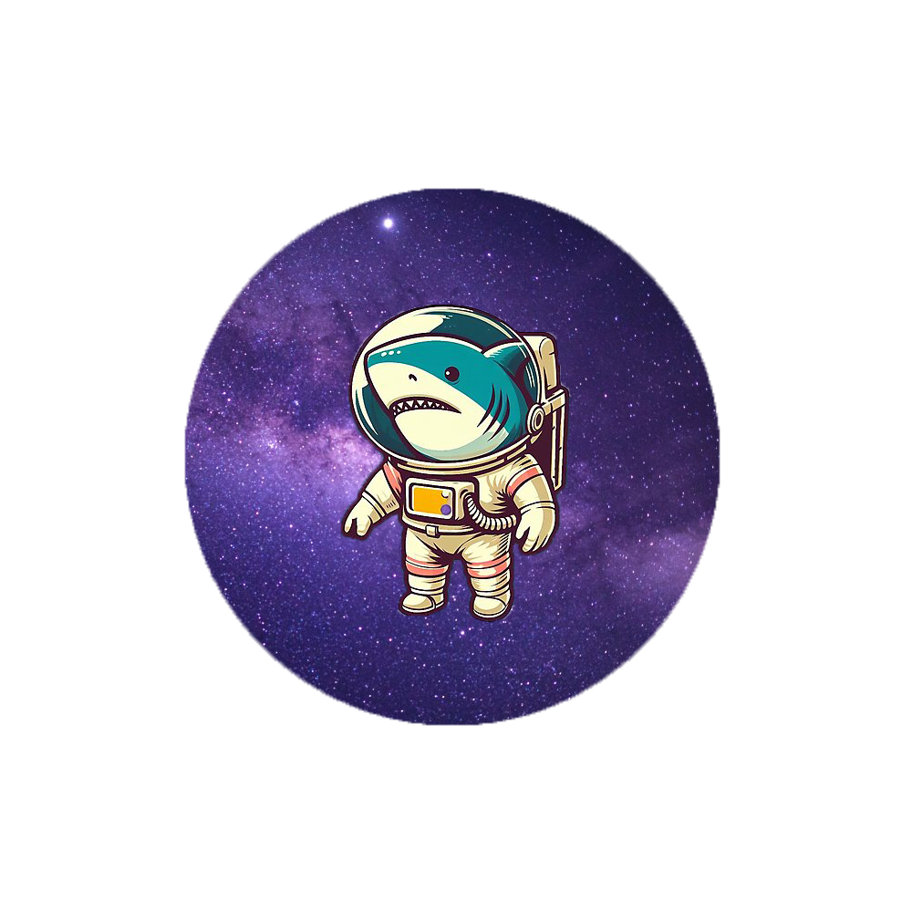

Capas y caracteristicas
Campos y gases protectores
La nave espacial Tierra
Nosotros
Sergio Burgos
Eduardo Vargas
Fernanda Chulim
Quintana Roo, México
Tel. +52 998 404 6104
eduardoantoniovargas.dgb@colegioboston.edu.mx Referencia